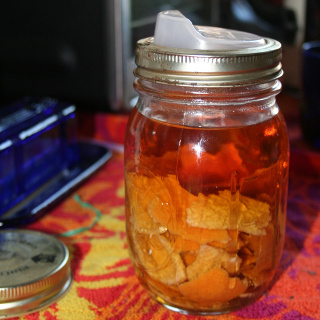

pouring from mason jars
Posted on May 4, 2014
by Daniel
A while back I acquired a sippy lid for Mason jars (aka Ball jars, canning jars). I have a lot of Mason jars, and the lid is really cute, but it never seemed terribly practical. I figure when one needs a sipping lid, one also needs a cup that isn’t made of glass. (I suppose I might feel differently if I commuted by car.)
Among other things, some of my Mason jars are full of vodka infusing plums, clementines, ginger, coffee, et cetera. Mason jars are convenient for getting the solids into and out of, but they’re not so great for pouring a shot or less worth. I’m pleased to confirm that the Cuppow makes a great pouring lid.
